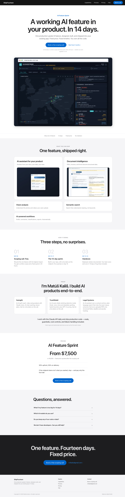

2026 · Shipped · Own brand
ShipFourteen
My own agency site. One offer — a production AI feature shipped into an existing product in fourteen days — so the page has no navigation problem to solve, only an objection problem.

Restraint as the whole design
A services site earns nothing from being visually clever; it earns from removing doubt. So this is deliberately the plainest thing in this collection — near-black text on white, one blue, system-adjacent type, centred column.
- Everything risky said in the fold. Fixed price, fixed timeline, you own the code — the three questions that otherwise arrive on the call.
- Real product screenshot, not an illustration. The frame under the hero shows an actual delivered dashboard, URL bar included.
- The CTA carries its own terms. Under the button: 30 minutes, written scope and fixed quote within 24 hours, whether we work together or not.
- One accent. Blue on the button, the eyebrow and the inline link — nowhere else.
Palette
#0066cc accent
#1d1d1f ink
#f5f5f7 parchment
#6e6e73 muted
